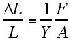
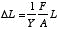

I throw this in here because it fits in with our picure of a solid. It will also help you to solve some of the problem sets.
When you push on a spring it compresses, when you pull it expands. This is the basic idea behind Young’s modulus. If I apply a force to a solid, it should shrink, if I pull it should lengthen. If you sat down and thought about it you might easily come up with the same relationship that Thomas Young did; you would set the relative change in the length proportional to the applied pressure. The pressure is the force per area of that applied force. You make this proportionality an equality by including a constant of proporionality (we shall call it 1/Y so we can rearrange the order.) This constant is different for diferent materials and has the same units as pressure (N/m2).
| Example: | |||||||
| What is the compression of 9 steel pillars each 3 m tall at the bottom of a 23,000 metric ton building. The cross section of each pillar is 7.5 10-3 m2. |
|||||||
By rearranging the formula above and looking up the coeficient for steel we can figure the compression of the pillars
&Mac198;L = 5 mm, not much but something to make a wall bukle if you didn't account for the shrinkage. |
|||||||